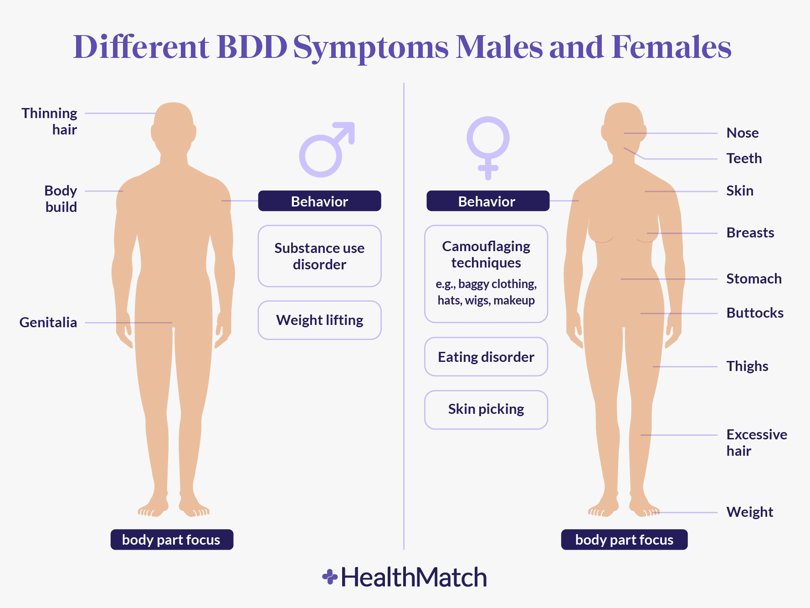
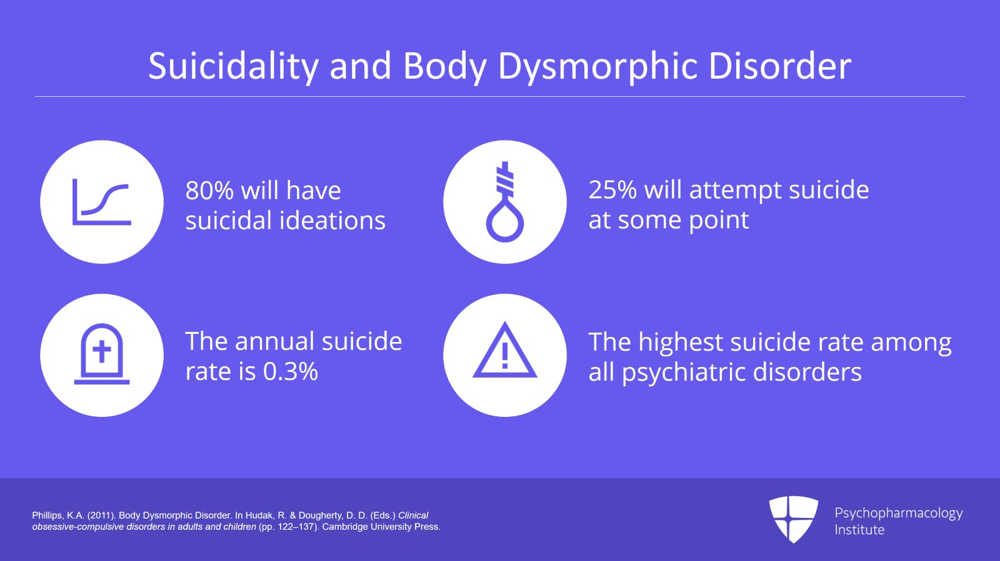
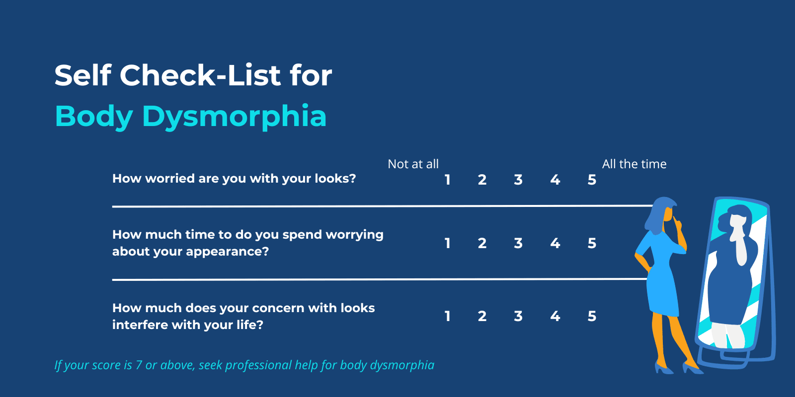
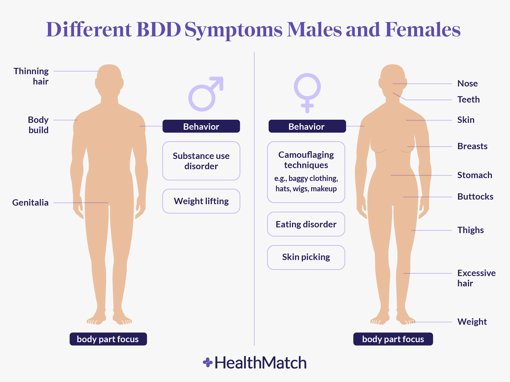
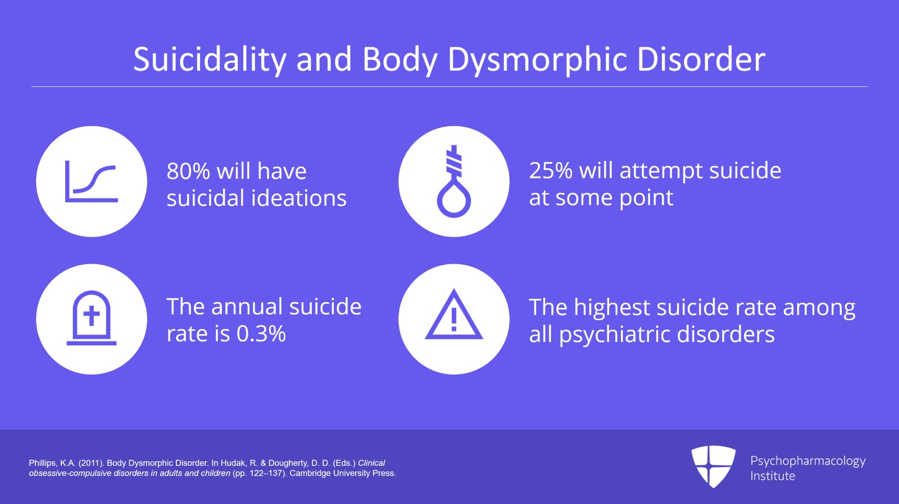
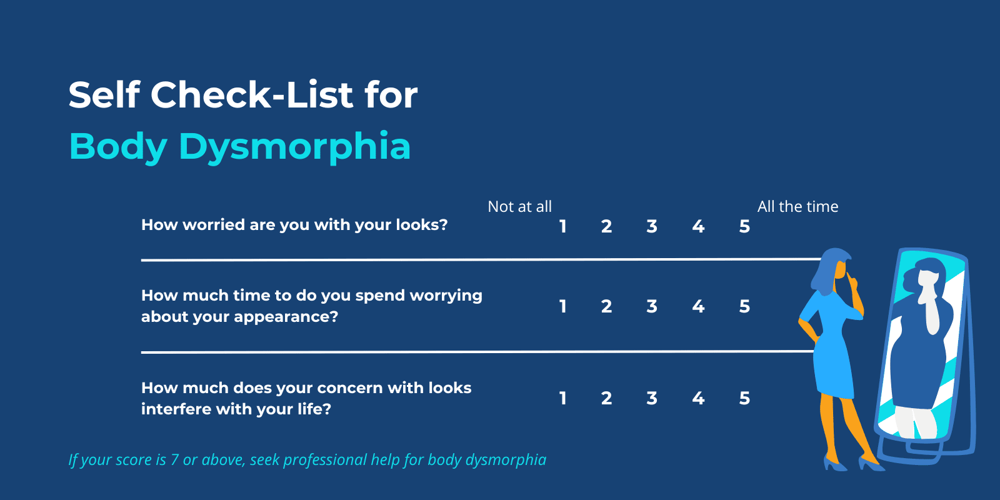

What is body dysmorphia?
Body dysmorphia is a mental health condition where a person spends a lot of time worrying about flaws in their appearance. Body dysmorphic disorder is slightly more common among women (2.5%) than among men (2.2%)
arrow_back
arrow_forward
What impact does body dysmorphia have on young adults?
Body dysmorphia hugely impacts the lives of young adults by affecting their mental,physical,emotional, and social well being.
- BBD is usually accompanied by other mental health issues like anxiety,depression,& OCD. This
leads to emotional distress.
- BBD causes young adults to withdraw from social events to avoid situations where their
appearance would be judged. This can lead to loneliness,isolation, and/or difficulties in -
building relationships.
- BBD can lead to harmful behaviors like excessive exercise ,dysfunctional eating, and
unhealthy coping mechanisms like substance abuse.
- BBD causes low self esteem and distorted body image. This can lead to an overall
dissatisfaction with life
arrow_back
arrow_forward
How to combat body dysmorphia ?
You can combat body dysmorphia with a combination of therapeutic interventions, healthy habits, and support systems.Recovery from BBD is a gradual process.
- Cognitive-behavioral therapy (CBT) is usually recommended for treating body dysmorphia. CBT
helps people recognize and change bad thoughts and actions they have about their bodies. This
therapy also teaches ways to deal with upsetting feelings and thoughts.
- Building a supportive network of friends, family members, or support groups can provide
encouragement, validation, and understanding. Sharing your experiences with others who have
similar struggles can reduce feelings of isolation and shame.
- Participating in activities that promote overall well-being, such as regular exercise,
nutritious eating, and sufficient sleep, can help improve mood and self-esteem. But, it's
important to maintain balance and avoid extremes that may exacerbate body image concerns.
 




